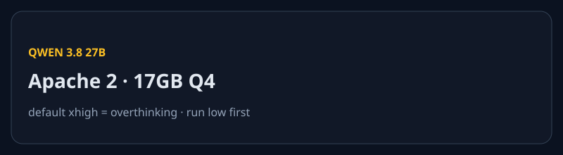

Stripe kupuje OpenRouter. Claude odslania prompt. Codex 1M.
Nowe vs wczoraj: deal Stripe x OpenRouter, system prompty Claude, Qwen 3.8 27B, Codex 1M przez konto ChatGPT, Workbench gasnie dzis. DeepSeek peak/off-peak = follow-up po wczorajszym cutoverze.

Stripe finalizuje zakup OpenRouter za ponad $7 mld
REPORTED Bloomberg pisze, ze umowa jest sfinalizowana. Cena moze sie jeszcze zmienic. Stripe w TechCrunch: nie komentujemy plotek. To nie jest komunikat firm.
OpenRouter to bramka do setek modeli. W maju seria B $113 mln przy wycenie ok. $1,3 mld (Sequoia, a16z, Menlo, Capital G). WSJ pisal o rozmowach miesiac temu.
Dlaczego ma znaczenie: Stripe wchodzi w routing inferencji, nie tylko platnosci. @maxleiter: Stripe i tak zbuduje wlasna bramke.
Zrodla: TechCrunch Bloomberg Law HN X / maxleiter


Produkty i modele
Codex: 1M context przez ChatGPT
NOWE Tibo (@thsottiaux, Codex/OpenAI): 1M tokenow GPT-5.6 Sol w Codexie dziala tez na kontach ChatGPT, nie tylko na kluczach API. Teaser Astra. ~8K polubien.
To nie jest wpis na openai.com. Sygnal staffera, nie GA changelog. Hermes Agent podniosl limity do 900K (@Teknium).
Workbench gasnie dzis
DZIS Legacy Workbench na platform.claude.com/workbench traci dostep 17.08.2026. Zapisane prompty, wersje, zmienne, completions i ewaly nie jada do nowego playgroundu.
Tego samego dnia gasna experimental prompt-tools API. Ogloszenie z 17.07. Konta od 16.06.2026 legacy nie mialy.
Claude publikuje system prompty
NOWE Oficjalna strona docs: pelne prompty claude.ai oraz aplikacji iOS/Android. Nie dotyczy Claude API. HN ~630 / 251 komentarzy.
Z promptu Opus 5: Fable 5 i Mythos 5, Project Glasswing, Claude Code, Cowork, Claude in Chrome/Excel/Powerpoint, Claude Tag, Claude Design. Knowledge cutoff Opus 5: koniec maja 2026.
Fakt: Anthropic pokazuje prompt konsumencki. Spekulacja: nowa polityka transparentnosci vs docs, ktore HN wyciagnal.
Qwen 3.8 27B na laptopie
NOWE Alibaba, Apache 2, 27B, vision. Willison 16.08 22:00. 17GB Q4 w LM Studio. Bardzo dobry lokalnie i spektakularnie overthinkuje, bo default to xhigh.
Pelikan-SVG: 21 minut i 22k tokenow reasoning. Ta sama rzecz bez reasoning: ~2 min. Rada: startuj z low / off. HN ~355.
DeepSeek: peak/off-peak live
FOLLOW-UP Wczorajszy cutover 16:00 UTC jest na stronie cennika. Flash output off/peak $0.66 / $1.32. Pro $1.98 / $3.96. Peak: 01:00-04:00 i 06:00-10:00 UTC.
Nie recyklingujemy tabeli z niedzieli. Nowosc: strona nadal pokazuje split, brak nowego changelogu 15-17.08. Na X: ciecia quota V4 Flash w Opencode Go.
Claude Code nadal v2.1.233
BEZ ZMIAN Ostatni tag 14.08 22:20 UTC. GitLab MR w --worktree, cgroup RAM na Linux, cache WebFetch. Cisza 15-17.08.
Laby i research
Newsroomy labow: weekend pusty
Sprawdzone i ciche 15-17.08: anthropic.com/news (ostatni 14.08), claude.com/blog, openai.com/news (JS wall; Learn changelog 13.08), x.ai/news (Grok 4.6 = 12.08), deepmind.google, blog.google/technology/ai, ai.meta.com/blog, mistral.ai/news, HF official blog (14.08), NVIDIA gen-AI blog.
Cisza labow nie znaczy pustej strony. Lead dnia jest w mediach, docs i spolecznosci.
Biznes
Amodei: crisis of trust
NOWE TechCrunch 16.08. Dario odpowiada Gavinowi Bakerowi: backlash nie wynika z jego negatywnego messagingu. To kryzys zaufania do firm i tech. Najcelniejsza krytyka: laby jeszcze nie dowiozly obietnic.
Regulacja nie jest automatycznym capture. Open-weights przesuwaja koncentracje na compute. @DavidSacks odpiera punkt po punkcie.
IPO i Nvidia — nie lead
Wtorne teksty o Anthropic IPO / $2T po debiucie SpaceX. Spekulacja. Q2 >$11.5B bylo wczoraj. Nie recyklingujemy.
HN trzyma watek WSJ/Reuters: Nvidia obcina gwarancje infra OpenAI rzedu $250B (14.08). Paywall Reuters.
Open-source / dev
Unsloth + Needle nadal jada
TREND unslothai/unsloth ~572* dzis. cactus-compute/needle ~443*, nadal na trending. ToolJet ~452*.
Token brokers
SPOLECZNOSC Vectoral 10.08, HN dzis ~276: rynek odsprzedazy kredytow API (30-80% off). Sygnal cost/abuse, nie narzedzie do polecenia.
Narzedzia
MathCode
Agent do kodu matematycznego. HN 16.08. Nisza, zywy watek builderski.
Vocal Slice
Show HN: ciecie audio zaznaczeniem tekstu, w calosci on-device.
Grok Bot w stacku builderow
TREND @minchoi: Grok Bot = research/orkiestracja, Grok Build+4.6 = daily coding, Sol = hard debug, Fable 5 = frontend. @farzyness: ~80% workflowow zeszlo z Hermes/CC/Codex na Grok Bot. @leerob: best UI is none.
Gadzety
URXR One
CROWDFUNDING Unseen Reality, live od 4.08. 93 g, 6DoF, micro-OLED, USB-C do hosta. Early bird ~$699, ship jesien 2026. Road to VR: >$500k w 24h.
MemoMind One — nadal live
CROWDFUNDING Bez kamery, dual micro-LED, od $399, zamyka ok. 27-28.08. Nie recyklingujemy jako lead.
Sygnaly X + Reddit + HN
HN Claude system prompts ~630 pkt. watek
HN Qwen 3.8 ~355. watek
HN Stripe / OpenRouter ~310. watek
HN token brokers ~276. watek
X @thsottiaux Codex 1M. tweet
X @DavidSacks vs Amodei. tweet
X Grok Bot minchoi / farzyness / leerob — adoption, nie release.
X scrapowane z sesji @ProductRootIO. Brak realnego szumu Qwen 3.8 na X w oknie — tylko HN/Willison.
Co warto dzis sprawdzic
- Export legacy Workbench zanim padnie dostep. release notes
- Codex: czy 1M Sol wstaje na koncie ChatGPT. Tibo
- OpenRouter: klucze i billing po newsie Stripe — umowa niepotwierdzona.
- Qwen 3.8 27B: odpal z reasoning
low/ off. Willison - DeepSeek: czy joby widza peak/off-peak. cennik
claude --version— nadal 2.1.233? releases- URXR One vs MemoMind — crowdfunding, nie shipping. URXR
3 tweets ready to post
https://techcrunch.com/2026/08/16/stripe-will-reportedly-acquire-ai-gateway-startup-openrouter-for-7b/
https://platform.claude.com/docs/en/release-notes/system-prompts
https://simonwillison.net/2026/Aug/16/qwen-38-27b/